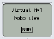

CheckSensors© 2018, ProtoIt Platform: MINDSTORMS |  |
Beschrijving:
Dit is niet zozeer een model. Gebruik dit programma om de juiste werking van een sensor te testen. De waardes van de volgende sensoren worden weergegeven: tastsensor, geluidsensor, lichtsensor en afstandsensor. Stel de poort in op het tabblad Instellingen.
Aansluitingen:
Onderdelen:
CheckSensors
Instellingen:
| Tastsensor | Stel de poort in waar de tastsensor op aangesloten is.Standaard op poort 1 ingesteld. |
| Geluidsensor | Stel de poort in waar de geluidsensor op aangesloten is.Standaard op poort 2 ingesteld. |
| Lichtsensor | Stel de poort in waar de lichtsensor op aangesloten is.Standaard op poort 3 ingesteld. |
| Afstandsensor | Stel de poort in waar de afstandsensor op aangesloten is.Standaard op poort 4 ingesteld. |